设备分类不清
统一设备目录
统一名称与分类，支持搜索与重复使用。
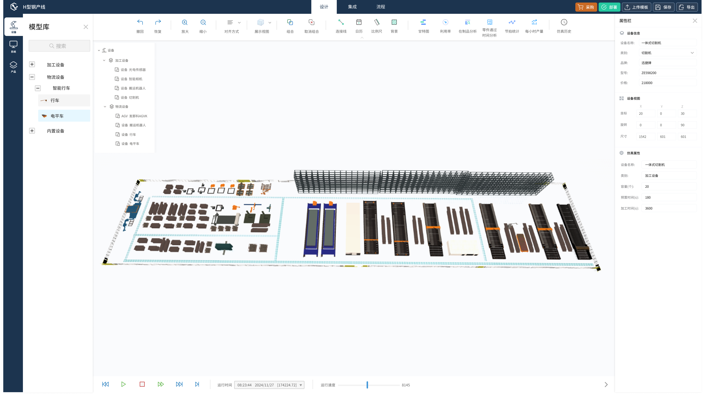
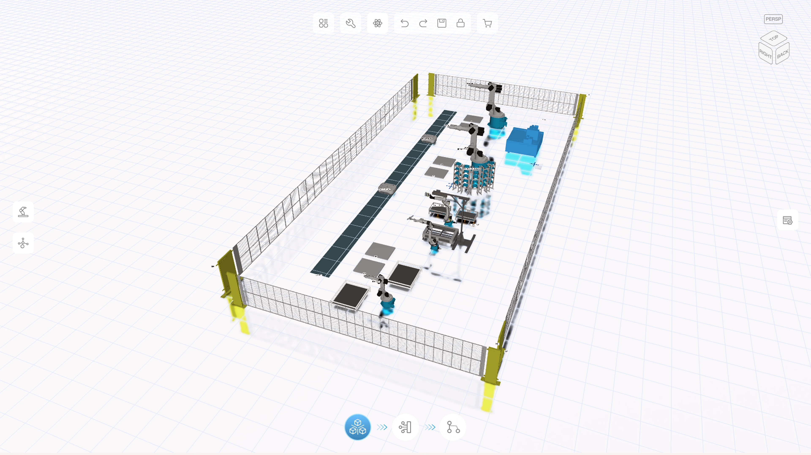
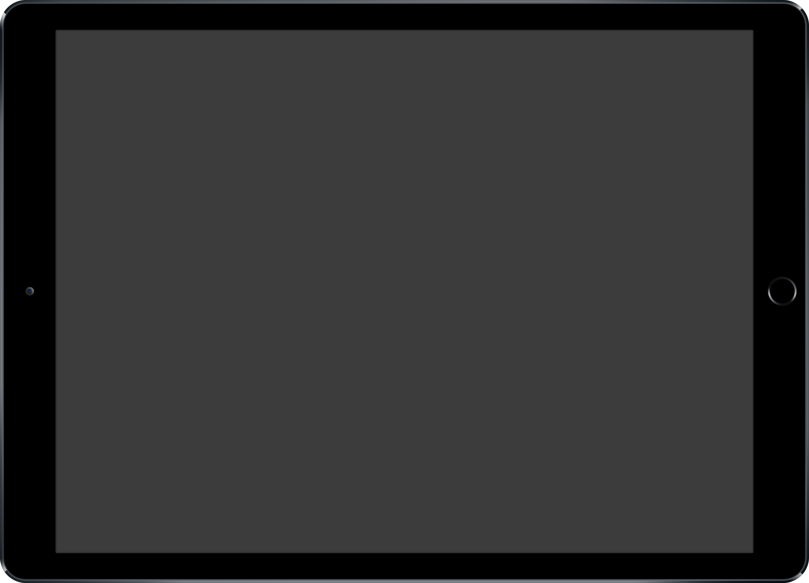
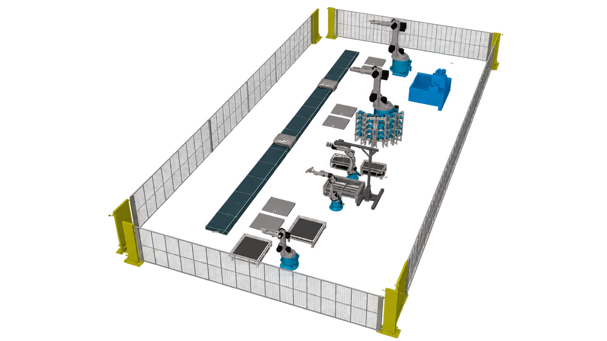
01 / RESEARCH & STRATEGY
规划产线需要选设备、安排位置并模拟运行。工作台集中这些步骤，减少查找与切换。
选择设备、调整位置与连接关系，完成产线布局。
设备不好找，布局需要反复调整，影响搭建效率。
FROM PROBLEMS TO DESIGN DECISIONS
设备分类不清
统一名称与分类，支持搜索与重复使用。
布局调整繁琐
集中对齐、组合与复制工具，用模板快速搭建。
参数分散、容易遗漏
设备信息与运行设置分组展示，方便核对。
异常难以定位
运行时显示进度与异常位置，可暂停查看。
方案不易比较
对比产量、设备工作时间与加工速度，发现效率不足的环节。
信息过于分散
常用工具与设置位置固定，按钮和提示保持一致。
重点检查搭建耗时、操作难点，以及问题是否容易发现。
02 / DESIGN SYSTEM
蓝色突出常用操作，状态色提示运行结果。按钮、表单与弹窗采用统一样式。
标题、数值与说明分清主次，方便查看和核对。
统一图标样式，选中后明显变化，便于确认当前操作。
补齐加载、禁用、失败与无数据提示，让用户知道下一步如何处理。
COMPONENT REUSE
共用界面组件，减少重复设计与沟通。
效率数据沿用原案例总结。
03 / SIMULATION WORKSPACE
左侧找设备，中间搭产线，右侧改设置。顶部编辑，底部控制运行。
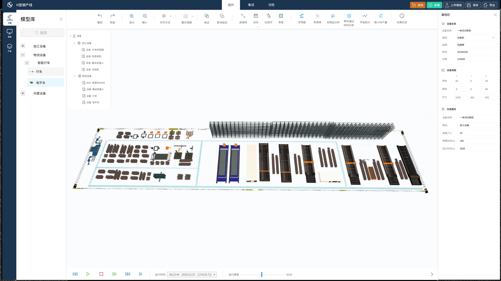
MODEL LIBRARY
按分类或搜索查找设备，浅蓝色标明当前选择；列表管理已放入场景的设备。
04 / SCENE & INTEGRATION
先布置设备，再连接设备，最后设置生产步骤。三个阶段清楚分开。
左侧管理设备，中间查看布局，顶部提供编辑工具。
用节点与连线展示设备连接，相关订单与班组分组管理。
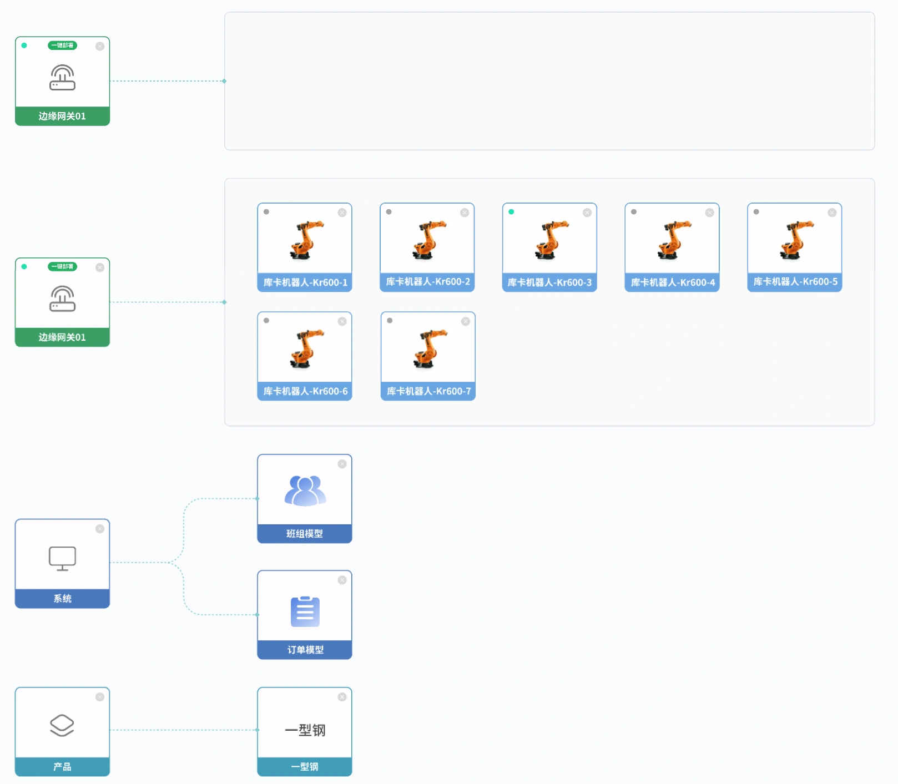
在同一区域查看设备名称、型号与连接设置。
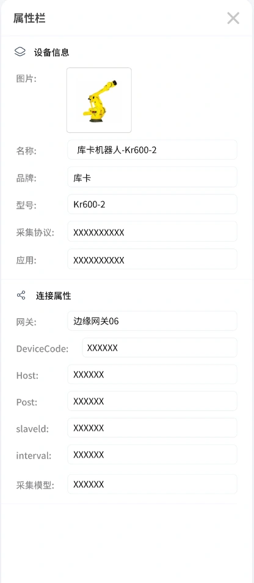
按上料、切割、分拣等步骤，设置设备动作与执行条件。
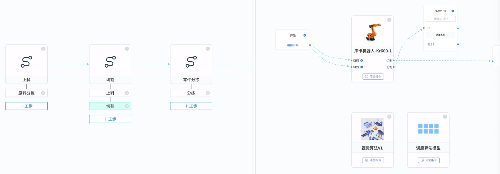
05 / INTERACTION IN MOTION
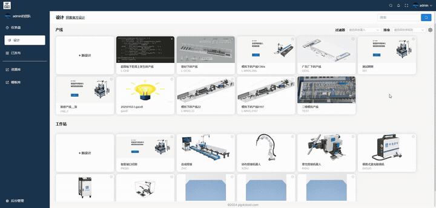
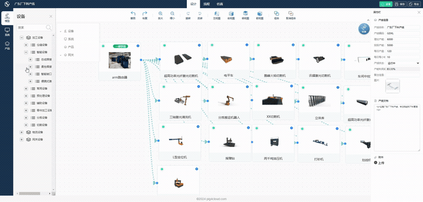
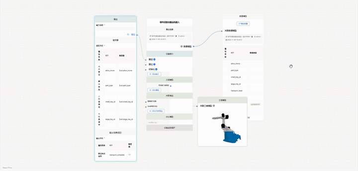
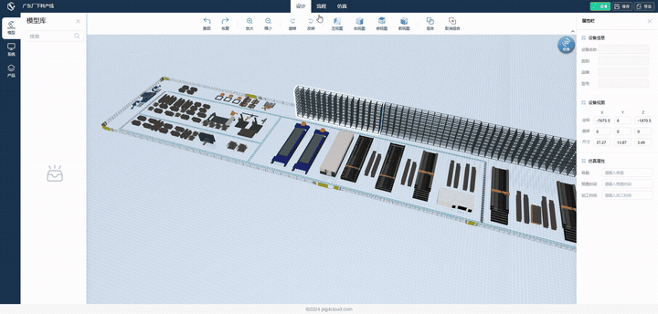
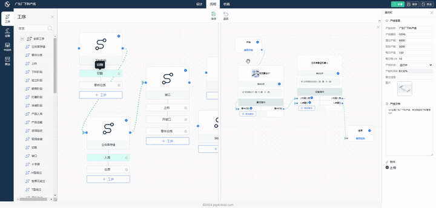
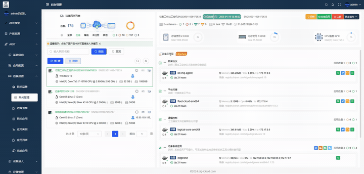
06 / FEEDBACK & ANALYSIS
地图定位设备，详情查看工作与等待时间，看板汇总产线表现。
在地图上找到设备与异常位置。
查看工作、等待与堵塞记录，了解效率不足的原因。
比较产量与各工位表现，为调整方案提供依据。
07 / SCREEN COLLECTION
按搭建、连接与监控分类，点击查看界面细节。